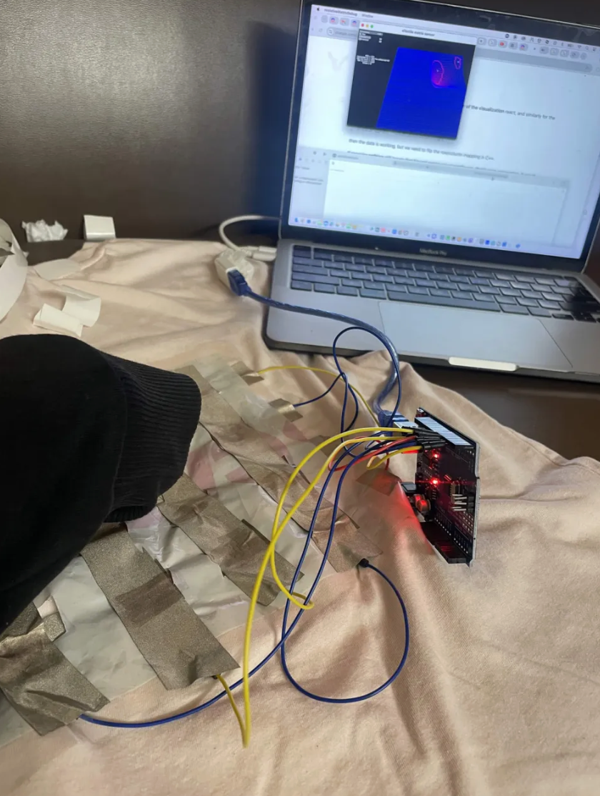
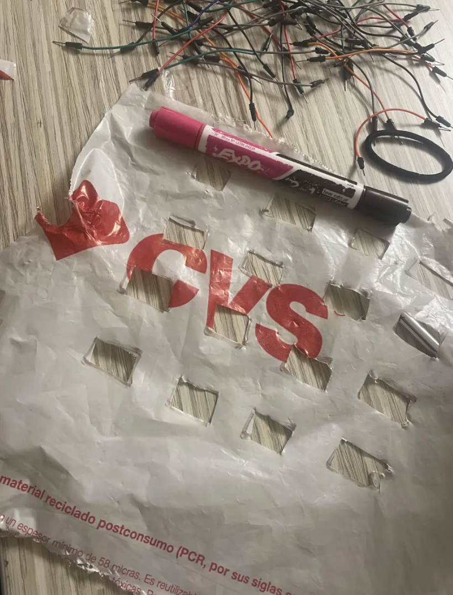
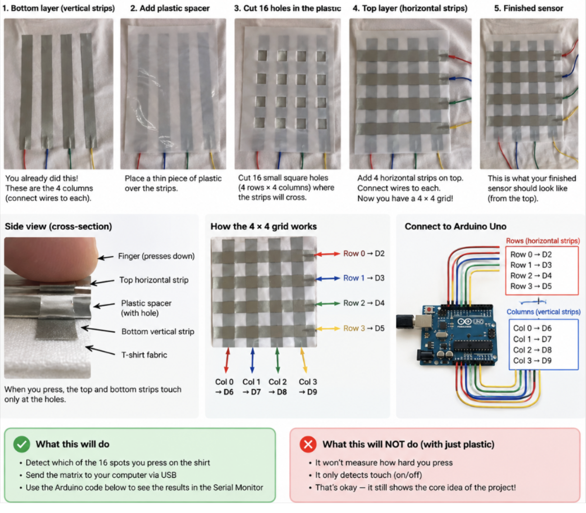

Resolution

Resolution
Alt Controller | Physical Prototyping | Hardware | Fabrication | Arduino | Unity
Resolution is a narrative alt-controller experience about memory, loss, and the act of remembering. Players revisit forgotten folders on an old Windows-style desktop and use a custom weaving interface to gradually bring low-resolution memories back into focus.
The project connects physical weaving interactions with digital gameplay, turning actions such as pulling, moving, and manipulating thread into meaningful interactions within the game.
- Role: Prototype Engineer (Hardware + Fabrication)
- Project Type: Narrative Alt-Controller Experience
- Engine: Unity
- Focus: Physical Prototyping, Electronics, Fabrication & Controller Development
- Development: Team-Based Project
Physical Controller Prototype
The team is developing a custom weaving controller that combines mechanical fabrication, electronics, sensors, and game-engine integration.
- Mechanical Prototyping: Developing physical mechanisms that recreate recognizable weaving actions while remaining practical for gameplay.
- Sensor Integration: Exploring sensors and encoders that can detect movement, position, rotation, and interaction with the weaving interface.
- Fabrication: Iterating on custom components through CAD, 3D printing, assembly, and physical testing.
- Unity Integration: Translating physical controller data into responsive gameplay interactions.
My Contributions
E-Textile Pressure Matrix
I designed and built a 4×4 interactive e-textile sensor matrix that detects touch across 16 individual points on a fabric surface. The sensor uses intersecting rows and columns of conductive material separated by a custom spacer layer, allowing physical pressure to create electrical contact at specific locations.
An Arduino Uno scans the matrix in real time and transmits sensor data over serial to an openFrameworks C++ application. The application processes the incoming data and provides a live visualization of interactions across the textile surface. I also adapted the original openFrameworks implementation for modern macOS/Xcode compatibility and developed the serial communication pipeline for the Arduino-based hardware.
This prototype explores how soft materials, embedded electronics, and real-time software can be combined to create responsive tangible interfaces for the project's physical controller.
- 4×4 Pressure Matrix: Built a 16-point fabric-based touch sensing surface.
- Arduino Integration: Developed the C++ scanning system for reading row and column interactions.
- Serial Communication: Created a real-time data pipeline between the Arduino and desktop application.
- openFrameworks: Integrated and adapted the visualization software for modern macOS and Xcode.
- Physical Fabrication: Constructed and tested the conductive textile layers and spacer system.
E-Textile Pressure Matrix

Prototyping

Matrix Construction

Pressure Matrix + Real-Time Visualization
Team Prototyping & Development
Mechanical Prototyping

Hardware Testing (Press volume icon)
Controller Development

Alt-Controller Experience
Instead of interacting with the game through a traditional controller, Resolution uses a custom physical weaving interface as its primary form of interaction.
- Physical Interaction: Players manipulate a tangible weaving system rather than relying solely on buttons, keyboards, or conventional controllers.
- Memory Reconstruction: Physical actions gradually restore fragmented and low-resolution memories within the game.
- Tactile Gameplay: The controller turns physical motion and material interaction into gameplay input.
- Narrative Integration: The act of weaving becomes part of the game's themes of memory, reconstruction, and loss.
Project Overview